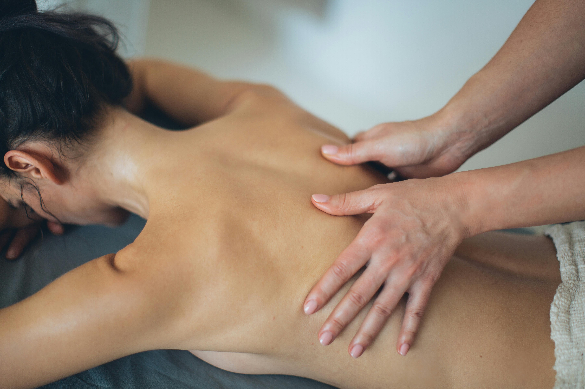

Herzlich Willkommen
Experience the best Thai massage in town with our professional and friendly staff.
Sumalee Thai Massage
Traditionelle Thaimassage:
Unter dem Namen „NuatPhaet Boran“ („Massieren nach uraltem Muster“) in Thailand bekannt, hat diese Massage eine Geschichte, die bis in die Zeit Buddhas (5. JH v.Chr.) zurück reicht zu dem Arzt Jivakar Kumar Bhaccha, der auch Buddha und seine Gemeinde ärztlich betreut haben soll. Er wird bis heute in Thailand als „Vater der Medizin“ verehrt. Diese Massage ist zusammen mit dem Buddhismus wohl von Indien nach Südostasien gelangt. In Indien wird sie nicht mehr praktiziert. Vielleicht haben Massageformen im alten Siamund die traditionelle chinesische Medizin die Thaimassage auch beeinflusst. Schriftliche Überlieferungen auf Palmblättern in Khmerschrift wurden im19.JH auf 60 Steintafeln im Tempel Wat Pho in Bangkok übertragen, der als Hort und Zentrum der traditionellen Thaimassage angesehen wird
Aromaölmassage:
Hierbei wird die entspannende Wirkung der Thaimassage durch den Einsatz ätherischer Öle ergänzt. Diese wirken über Haut und Einatmung auf den Organismus. Durch Auswahl des verwendeten Öls kann die Massage entspannend oder anregend, erfrischend oder wärmend wirken.
Fussreflexzonen-Massage:
Die Fussreflexzonen-Massage ist Teil sowohl der ayurvedischen und der chinesischen Tuina-Massage, aber auch der Thaimassage. Es heißt, dass auch die Reflexzonen, die allen Organen und Körperteilen zugeordnet werden, mit den Energiebahnen (Meridiane der chinesischen Medizin, Energielinien in Ayurveda und Thaimassage) zusammen hängen. Ihre Behandlung regt die entsprechenden Organe an. Die Fussreflexzonen-Massage findet bei uns zur Entspannung, nicht zu gezielten Behandlungszwecken, Anwendung.
Hot Stone-Massage:
Die Behandlung mit ca. 60 Grad heißen Steinen, oft vulkanischem Basalt, ist im gesamten asiatischen, pazifischen und amerikanischen Raum bekannt, auch in Thailand. Die Steine werden zum Teil auf den Körper gelegt, zum Teil wird mit ihnen massiert. Es können auch Klopfen mit einem Stein und Vibrationen mit 2 Steinen eingesetzt werden. Wirksam wird eine Kombination aus der Massage und der Muskelentspannung durch Wärme. Die Hot Stone-Massage kann ebenfalls mit dem Einsatz von Aromaölen verbunden werden.
Hierbei werden Stoffbeutel eingesetzt, die pflanzliche Extrakte, Heilkräuter, Früchte und Gewürze enthalten und erwärmt werden. Aromaöle können auch hier dazu kommen. Die Kräuterstempel können aufgelegt und zur Massage verwendet werden. Es kommt zu einem stark entspannenden Zusammenwirken von Wärme, Massage, und Düften bzw. Wirkung über die Haut der verwendeten Kräuter und Extrakte sowie, wenn eingesetzt, Aromaöle.
Der Arbeitsalltag kann heute, etwa bei Büroarbeit, zu Verspannungen im Nacken-Schulter-Rückenbereich und zu Kopfschmerzen führen. Die gezielte Massage dieser Bereiche löst diese Verspannungen und führt zu Entspannung und Wohlbefinden.
Galerie
Check out our gallery.